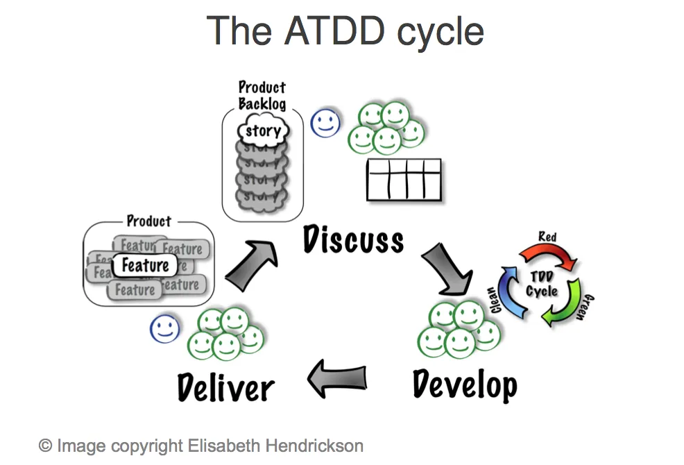

Acceptance Test Driven development (ATDD) in Software Engineering
Acceptance Test-Driven Design (ATDD) on meetod, mis kaasab rakenduste loomisse kasutajate või klientide
tagasisidet. Automaatseid teste luuakse juba arendusprotsessi alguses, kui osapooled määratlevad
aktseptantsteste, võimaldades seeläbi luua toote, mis vastab täielikult kasutajate ootustele funktsionaalsuse
osas. See meetod soodustab lihtsust, koostööd ja tagasisidet kogu protsessi jooksul, pakkudes tihedamat
vastavust toote ja kliendi ootuste vahel.
ATDD (Acceptance Test-Driven Development) on arendustehnika, mis seab rõhuasetuse lõppkasutajatele või
klientidele, tehes aktseptantstestidest arenduse aluse. See tähendab, et keskendutakse süsteemi tegelikult
vajaliku funktsionaalsuse/käitumise pakkumisele. Selle metoodika puhul kirjutatakse aktseptantstest kasutaja
vaatenurgast ning testjuhtumid luuakse juba enne koodi kirjutamise alustamist.
Mis on Acceptance Test-Driven Development (ATDD)?
ATDD (Acceptance Test-Driven Development) on arendustehnika, mis seab rõhuasetuse lõppkasutajatele või
klientidele, tehes aktseptantstestidest arenduse aluse. See tähendab, et keskendutakse süsteemi tegelikult
vajaliku funktsionaalsuse/käitumise pakkumisele. Selle metoodika puhul kirjutatakse aktseptantstest kasutaja
vaatenurgast ning testjuhtumid luuakse juba enne koodi kirjutamise alustamist.
ATDD laiendab TDD-d (Test Driven Development), mis rõhutab arendajate, testijate ja äripoolte koostööd ning
järgib testide-esikohal lähenemist. Samuti on ATDD väga sarnane BDD-le (Behavior Driven Development), kuid
nende vahel on väike erinevus: BDD keskendub süsteemi käitumisele, samas kui ATDD keskendub kliendi tegelikele
nõuetele.
Mõned ATDD-s kasutatavad tööriistad on TestNG, Spectacular, FitNesse, EasyB, Concordian, Thucydides jne.
ATDD (Acceptance Test-Driven Development) tsüklis on neli etappi: arutelu, täpsustamine, arendus ja
demonstreerimine. Vaatame neid ükshaaval.
Täpsustamine (Distill) - Aktseptantstestide kriteeriumid ja automatiseerimine (erinevate stsenaariumide ja
süsteemi käitumise arvestamine nende käigus).
Arendus (Develop) - Rakendamine (funktsionaalsuse arendamine Test First Development ehk TFD lähenemisviisi
järgides, kuni testid on edukad/õnnestuvad).
Demonstreerimine (Demo) - Prototüüpmudel (demonstreerimine äripoolele ja iteratsioonidega jätkamine).

Acceptance test-driven development
Acceptance test-driven development
Eelised
Puudused
Annab nõuete kohta parema selgituse.
Probleemide/probleemide kiirem lahendamine.
Parandab koostööd meeskonnaüleste liikmete vahel.
Rohkem tähelepanu klientide vajadustele.
Toimib kogu arendusprotsessi juhisena.
Lihtsam hallata.
Aeganõudev: Aktseptantstestide määratlemine ja automatiseerimine võtab alguses palju aega.
Eeltöö vajadus: Suurem ettevalmistus enne arendust.
Kõrgem alginvesteering: Tööriistade ja koolituste kulud.
Muutuvaid nõudeid on keeruline hallata: Testid võivad muutuvate nõudmistega ajapikku vananeda.
Meeskonna küpsus: Edukaks ATDD rakendamiseks on vajalik hea koostöö meeskonnas.
Sobimatus väiksemates projektides: Väikeste projektide puhul võib ATDD olla liialdatud.
Cucumber on laialdaselt kasutatav tööriist käitumispõhise arenduse (BDD) ja
ATDD jaoks. See võimaldab huvipooltel kirjutada aktseptantskriteeriume inimkeeles arusaadavas formaadis, mida
nimetatakse Gherkiniks. Cucumber automatiseerib need aktseptantskriteeriumid testidena, mida saab rakenduse
vastu käivitada. Cucumber toetab mitmeid programmeerimiskeeli, sealhulgas Java, Ruby ja JavaScript.